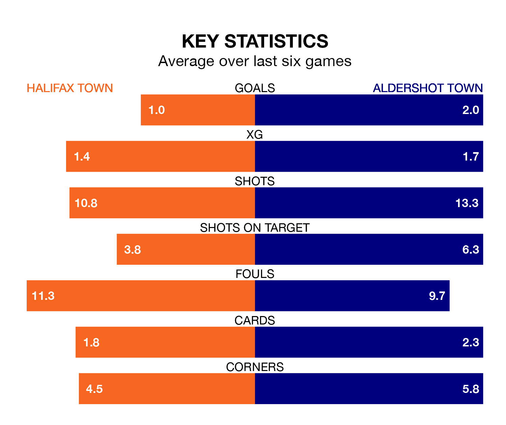

Aldershot Town face a challenge to maintain their high-scoring form away against a tight Halifax Town defence on Saturday.
With 54 goals in 30 games, Aldershot are the third-highest scorers in National League ahead of the 3pm kick-off at the Shay Stadium.
They face a Shaymen side who have scored 32 in 29 matches, but conceded only 31 goals, putting them joint-top of the league's tightest defences.
In the last 10 years, Halifax and Aldershot have played each other on 17 occasions. Halifax won seven of them, Aldershot six, and they drew four times.
On average, the Shaymen scored 1.0 goal and the Shots 1.2 in those matches.
Their last meeting was on November 25, when Aldershot won 1-0 at home.
Aldershot are seventh in the table after 30 games, of which they have won 13 and drawn six, earning 45 points.
Halifax are four places behind Aldershot Town in 11th, with 10 wins and 11 draws putting them on 41 points.
Halifax Town are in disappointing form in National League, with one win and three draws from their last six games.
With two wins and three draws over that period, the Shots' form is better – they have taken nine points from 18, compared to the Shaymen's six.
Halifax's last match was on January 27, a 2-0 loss against Wealdstone.
Aldershot drew 3-3 with Wealdstone last time out, on Tuesday, with Jack Barham, Kwame Thomas and Lorent Tolaj on the scoresheet.
Updated: 15:45 (UTC), 02/02/24